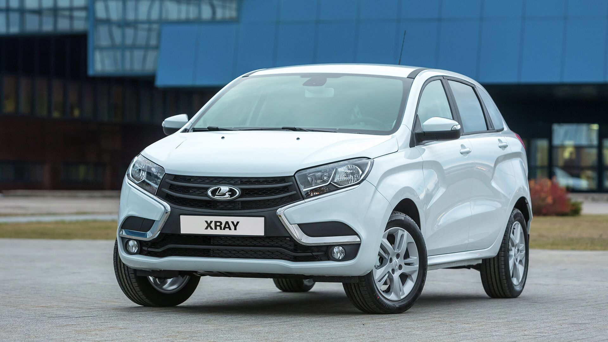
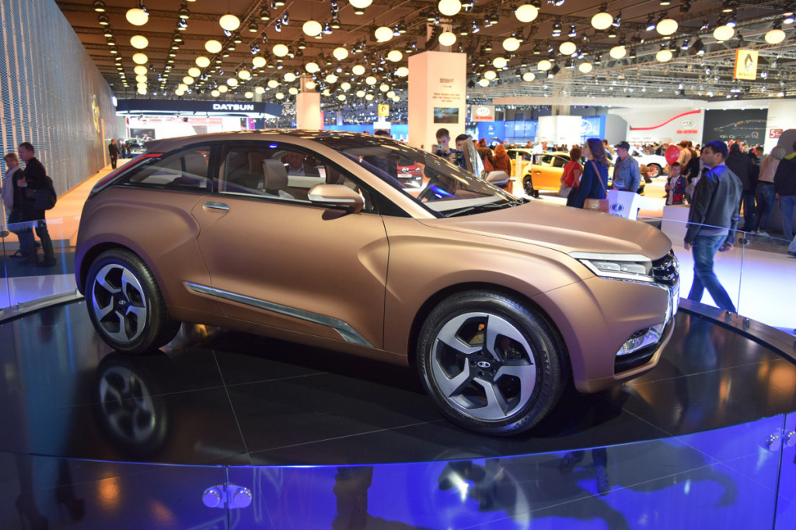
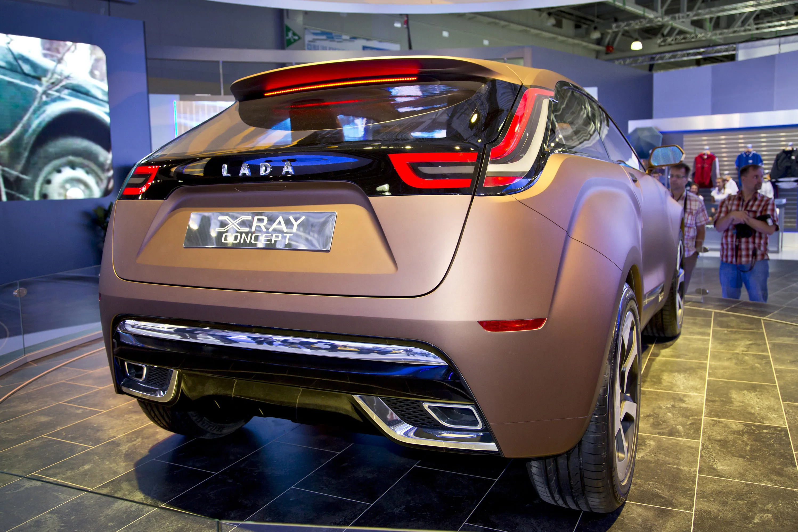
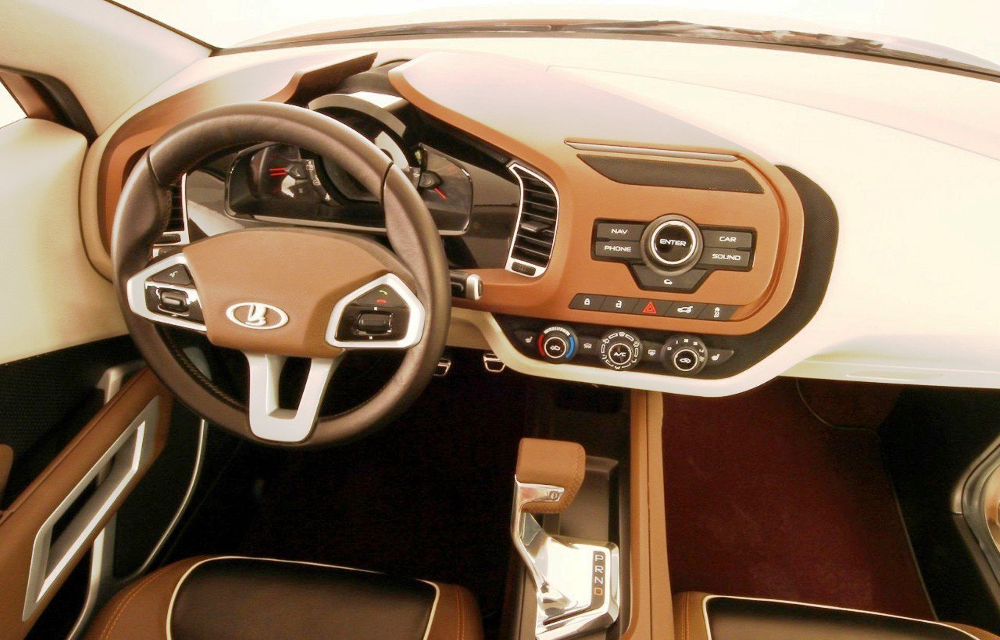
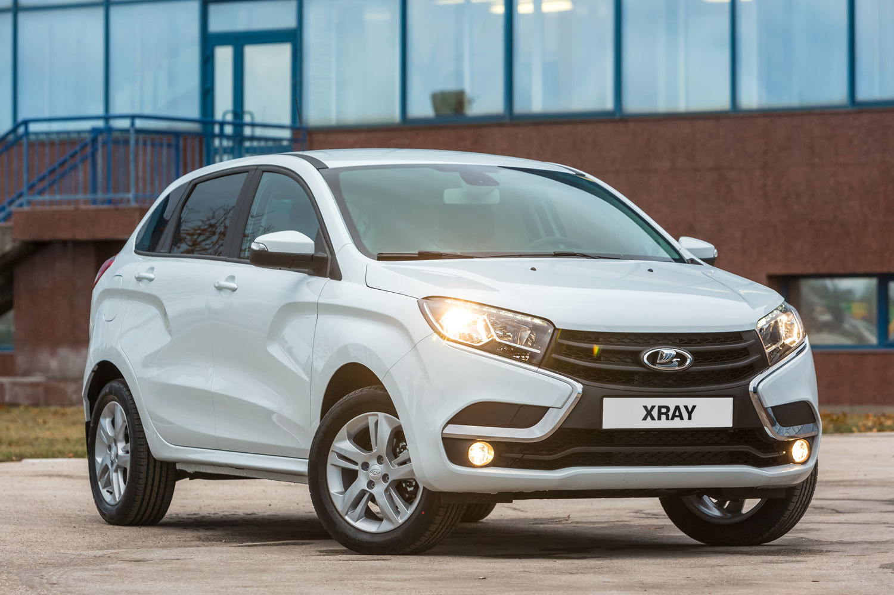
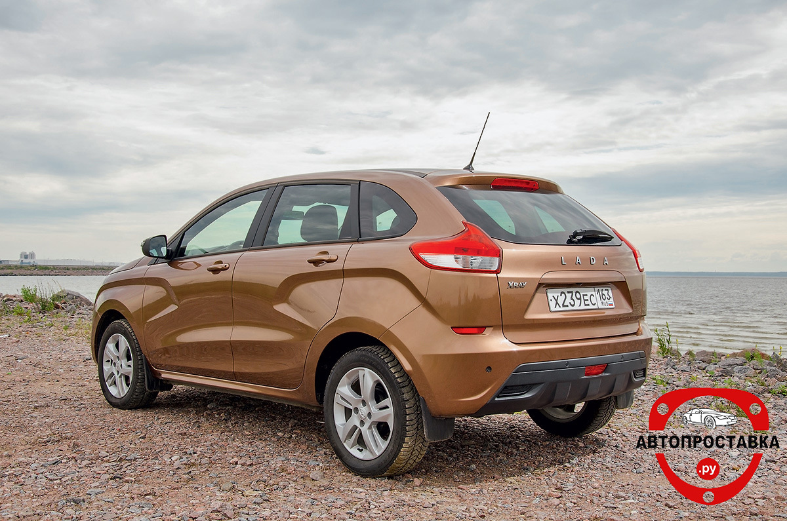
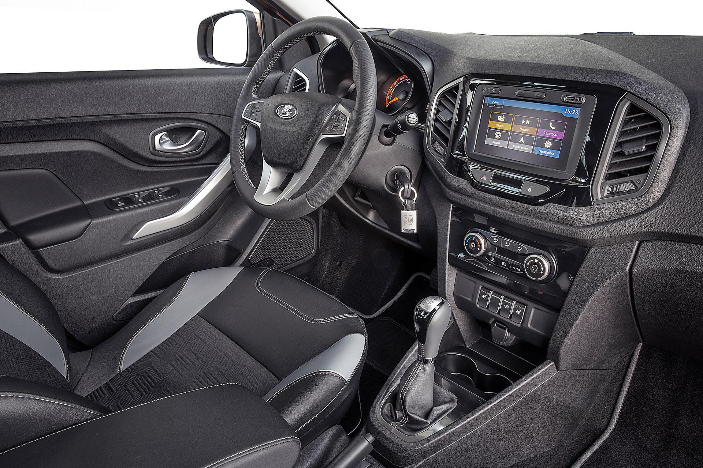
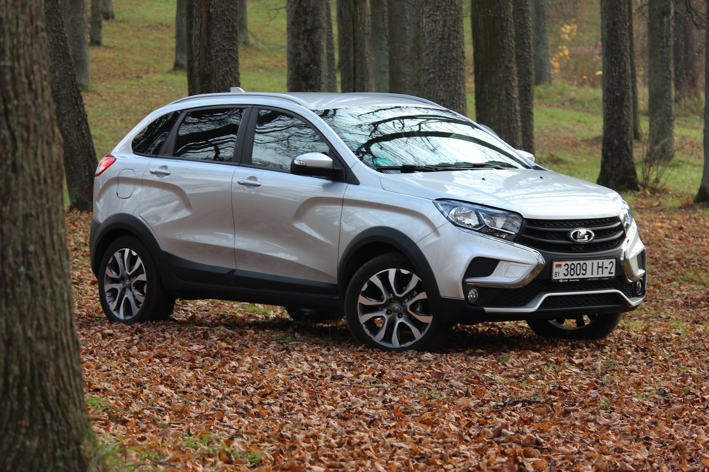
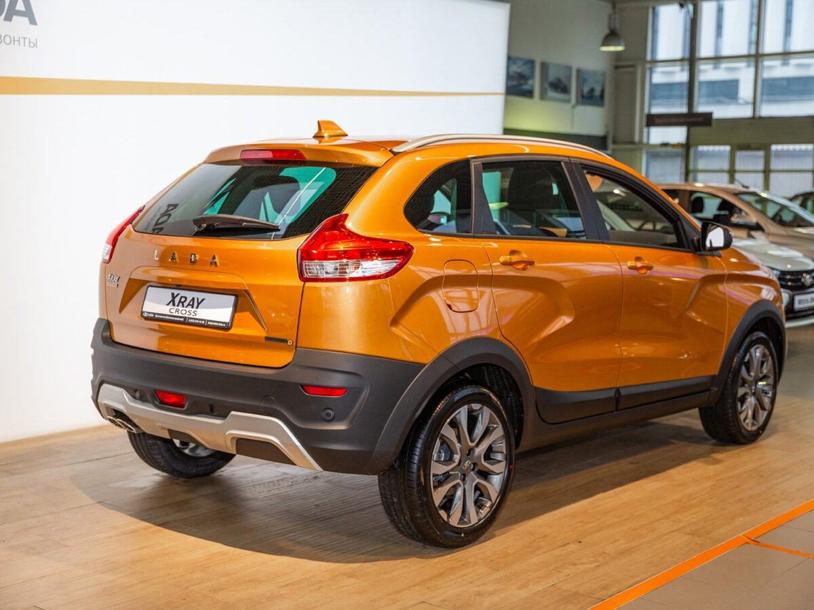

LADA XRAY — российский автомобиль малого класса, компактный высокий хетчбэк, выполненный в стиле SUV. В отличие от родственного ему семейства моделей LADA Vesta, использует иностранную платформу «В0». Выпускался российской компанией АвтоВАЗ на производственной площадке в Тольятти с декабря 2015 года по февраль 2022 года. LADA XRAY позиционировался как компактный кроссовер. Несмотря на своё предназначение как автомобиль повышенной проходимости, по неким причинам данный автомобиль не получил привода всех колёс (4x4).
В августе 2012 года на Московском международном автомобильном салоне был показан трёхдверный концепт-кар кроссовера LADA XRAY Concept. Над концептом работала команда под руководством нового шеф-дизайнера Стива Маттина, который взял за основу проект «Lada C-Cross». За экстерьер отвечал Евгений Ткачёв, за интерьер — Николай Суслов. Руководитель проекта LADA XRAY — Олег Груненков. Единичный экземпляр автомобиля был создан итальянской фирмой Vercarmodel Saro S.r.l. по проекту дизайн-студии LADA. Стоимость создания этого образца составила приблизительно 1 миллион долларов. Концепт демонстрировал планы по развитию нового визуального стиля для автомобилей LADA, а также развитие в сегменте внедорожников, кроссоверов и SUV. «XRAY» — это аббревиатура, состоящая из «X» — как обозначение пересечения (англ. crossover, в значении типа кузова автомобиля, смотри кроссовер), «R» от слова «Recreation» («отдых»), «A» от слова «Activity» («активность»), «Y» от слова «Your» («твой») или «Young» («молодой»).
Через два года на том же московском автосалоне был показан второй концепт — пятидверный LADA XRAY Concept 2, уже более близкий к образцу для серийного производства.
Серийное производство этой модели началось 15 декабря 2015 года, в полном соответствии с графиком, о котором ранее сообщалось предприятием. Автомобиль выпускается на производственной площадке в Тольятти. Старт продаж состоялся 14 февраля 2016 года.
В 2016 году были представлены концепты спортивной и вседорожной версий: LADA XRAY Sport Concept и LADA XRAY Cross Concept. Спортивная версия получила заниженный клиренс, «спортивную» настройку двигателя и подвески, а вседорожная версия наоборот получила увеличенный клиренс, а также обвес — накладки на нижнюю часть дверей, пороги, колёсные арки, бамперы, защищающие эмаль кузова на лёгком бездорожье.
15 февраля 2021 года стало известно, что «АвтоВАЗ» отзывает в России 9,3 тыс. автомобилей, выпущенных с января по май 2019 года, у которых может быть повреждён сварной шов вала электромеханического усилителя рулевого управления.
В феврале 2022 года сборка LADA XRAY в Тольятти была остановлена из-за перебоев в поставках запчастей. В июле 2022 года стало известно, что «АвтоВАЗ» возобновлять производство XRAY не планирует.
Дизайн автомобиля разработан стилистами АвтоВАЗа. Конструкция автомобиля создана совместно специалистами Renault и АвтоВАЗа на базе платформы В0. Длина серийного кроссовера LADA XRAY составляет 4164 миллиметра, ширина 1764 мм, высота — 1570 миллиметра. Колёсная база — 2592 миллиметра. Объём багажника — от 361 до 1207 литров (при сложенных спинках задних сидений).
На выбор было доступно два бензиновых двигателя: модели объёмом 1,6 литров мощностью 106 л. с. (ВАЗ-21129) и модель объёмом 1,8 литра на 122 л. с. (ВАЗ-21179). Вариант LADA XRAY с двигателем 1,8 л и мощностью 122 л. с. получил трансмиссию АМТ (автоматизированную механическую коробку передач).
Изначальный дизайн, концепт:



То, что получилось в итоге :(:



Версия Cross:

